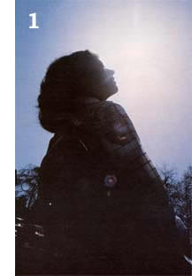
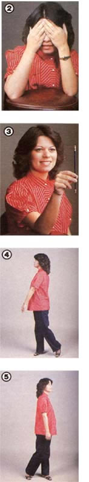

Today, more than ever, inappropriate response to stress is being cited as a primary cause of many ailments that plague modern humanity. Whether it's caused by environmental, cultural, or psychological factors, anxiety can lead to a great number of mental and physical problems. Indeed, recent research indicates that stress is a major contributing factor in disorders of the eye as well.
Such findings can have wide-ranging implications. After all, at least half of the population in the United States currently wears prescription glasses or contact lenses. Furthermore, possibly as many as 70°70 of Americans have visual pro blems of which they're not even aware. In a sense, you might say that good eyesight is no longer normal!
Yet, very few folks are born with visual abnormalities. For the most part, defective eyesight is acquired. If that's so, can poor vision be corrected? According to studies done by Dr. William H. Bates, a distinguished New York ophthalmologist who pioneered in the field of visual training, eyesight can be dramatically improved . . . without the aid of corrective lenses!
In the past, most vision experts worked from the theory that the eye is able to focus on varying distances solely because it can change the shape of its lens . . . and that most seeing problems are due to a permanent deformation of the eyeball and lens. However contrary to these widely held beliefs-Dr. Bates's research has indicated that the whole eye, not merely the lens, adapts itself to focusing by means of the muscles of the eyeball. When habitual tension and strain tighten them, then, a sight dysfunction may occur . . . and teaching these uptight muscles to relax, through a program of visual training, can remedy many seeing disorders.
It should be noted here that few eye professionals support this theory, and even fewer offer visual training to their patients. (To find out the names of optometrists in your area who do offer such programs, write to Ms. Jerriann J. Taber, Vision Training Institute of America, Dept. TMEN, 11303 Meadow View Road, El Cajon, California 92020. Please enclose a long, self-addressed, stamped envelope.) Most eye specialists continue merely to prescribe the wearing of corrective lenses for refractory errors, which-in effect encourages the eyes to maintain abnormal vision by allowing them to become permanently adjusted to a constant degree of error.
Practitioners of the visual-training method suggest, however, that a person gradually decrease the amount of time spent wearing corrective lenses during the day . . . and that fundamental training exercises be performed (without wearing glasses or contacts) to lessen dependency on mechanical aids.
The purpose of this article is not to debate the merits of the Bates stance against those of standard practices, but simply to present the ideas of visual-training advocates so that readers who wish to can try out this lesser known health care option for themselves. Consequently, the following information offers strictly the Bates school's point of view.
The following techniques, then, are based on these premises: First, that the art of seeing-like other fundamental skills such as talking, walking, and using one's hands-is acquired. Second, this skill is normally learned through unconscious self-instruction in childhood. Third, for many of us in today's pressure-packed world, the only way to keep perfect sight is to practice techniques of conscious eye relaxation. Finally, if the exercises are performed correctly for a sufficient length of time-in conjunction with a proper diet and a physical conditioning program-eyesight will show permanent improvement. (The corollary to this is that the stronger the lenses you wear now-and the longer the time that you've worn them-the more time and effort you'll have to put forth to achieve better vision.) All right, let's begin.
It's best to "palm" while sitting or lying on the floor, with your elbows propped on a cushioned surface. Close your eyes and then cover them with the palms of your hands, crossing the fingers of one hand over those of the other on your forehead. Don't, however, apply any pressure on the lids with your palms. Ideally, you'll "see" a field of intense blackness, which indicates a state of perfect relaxation. If instead you witness illusions of light, bright color, or patches of gray, you're tense to some degree. However, don't concentrate on trying to "see" blackness, as the effort itself will produce strain. Rather, passively visualize a pleasant memory-one that helps ease your mind-while keeping your shoulders and neck relaxed. The more frequent and lengthy the periods of palming, the more likely you are to school your eyes to reduce muscle tension, with subsequent benefit to your sight.
This whole-body exercise improves vision, relieves fatigue and stress, and increases the mobility of the eyes. Stand looking straight ahead, with your feet positioned about 12 inches apart. Now, rotate your body-head, trunk, and all-to the left, throwing your weight onto your left foot while you allow your right heel to rise from the floor. Keep your shoulders and neck straight. When you swing to the opposite side, shifting your weight to your other foot, your eyes will cover a 180° arc. Absolutely no attempt should be made to focus your sight on anything. Just maintain an attitude of passive relaxation, making about 30 of these "arcs" per minute. You should do this exercise twice daily, completing the swing from side to side 100 times. By doing your swings right before bedtime, you'll prevent eyestrain from occurring during sleep.
Cultivate the habit of frequent, effortless blinking. This performs two vital functions: It lubricates and cleanses the eyes with tears, and it rests and relaxes the eye muscles.
Although there's no scientific evidence available to prove that sunning helps vision, many people who have tried it testify to its benefits . . . particularly those whose eyes have become oversensitive to light. (EDITOR'S NOTE: See the sidebar for a first person account-by one of MOTHER'S former editors-of using these techniques to solve this problem.)
All sunning should be done with the eyes closed. Sit or stand in the sunlight, face relaxed, and let the rays of the sun penetrate and ease the tension in your eyelids. This is a good way to start off the day, and even a few minutes will help. To avoid possible strain on your eyes, rotate your head slightly from side to side or move it as if you were using your nose to draw a circle around the sun . . . breathe deeply and don't squint.
Central fixation refers to the fact that-since the central portion of the retina is the point of most acute vision-the eye sees only one small part of any object sharply, with all the other areas being slightly blurred. When you look at a thing, your eye shifts very rapidly over it to achieve the illusion of clearly seeing the entire object at once. To demonstrate this fact, look at an object, focusing on its topmost part. Without actually moving your focus downward, try to "see" the bottom of the object. You'll find that its lower details don't appear to be sharp.
A problem-free eye shifts quite rapidly and unconsciously while it is observing. People with imperfect vision often try to see a large part of the visual field at once, all areas equally well simultaneously, without moving their eyes. This puts considerable strain on the eye . . . and also on the brain, the organ that actually has to integrate what you see.
To correct this tendency, it's important to develop your central fixation by teaching your eyes that it's "acceptable" to see only one point clearly at a time. The orbs must learn to move and refocus rapidly, rather than straining to see an entire object at one sighting. You can do this by studying an eye chart, training yourself to look at the top of a letter on the chart while "accepting" an unfocused image of its bottom (and vice versa). When you can accomplish this easily, your eyes will be relaxed, and your vision will be improved.
Loss of vision is often realized in direct proportion to loss of eye motion. Therefore, rapid eye-shifting is beneficial in all cases of visual difficulties . . . most notably, in nearsightedness, farsightedness, astigmatism, and squint. In contrast to the last exercise, now force your eyes to make a series of small-scale shifts, consciously trying to sense and per ceive the various sections of an object . . . without gazing fixedly at it to see all of its parts clearly at once.
Actually, all of the exercises mentioned will be relaxing the muscles and reducing strain-improve a person's eyesight, no matter what the particular affliction. However, there are a few more activities that can be done to improve vision, which focus on several of the more common eye problems.
The most prevalent of all visual defects, myopia (commonly known as nearsightedness) is almost invariably an acquired condition. The cause is often thought to be emotional, and usually is the result of strain. For instance, schoolchildren are sometimes compelled to perform tasks that they may find boring or pointless. This, along with competition, anxiety, peer pressure, and fear of authority figures, may cause the mental stress to w promotes myopia... and also occurs whenever the eye looks at anything that's unfamiliar. On the other hand, when it sees a known object, it shows no evidence of making extra effort. So, focusing on an object to which you're accustomed just prior to looking at an unfamiliar one will help reduce your visual tension.
Certain techniques can be used to help decrease myopia. For instance, try placing a calendar on the wall and sitting down in front of it . . . at a distance from which the numerals are barely legible. Remove your contact lenses or glasses (if you're wearing them) and "palm" your eyes. Then practice reading each number, at first closing your eyes momentarily before looking at it. (Your eyesight is always best when your eyes are first opened . . . and visualizing each numeral beforehand increases your ability to perceive the figure clearly when you do look at it.)
Now, read each figure on the calendar with both eyes, and then repeat the process while alternating eyes (cover the resting one with an open palm as you work). If one of your "gazers" is weaker, work with it more. Practice this exercise at least 15 minutes per day. In addition, try moving your chair back a foot or two each time you perform this exercise.
Your sight should improve considerably over the course of a few weeks.
Along with that, work on rapidly changing your focus from near objects to more distant ones and back again. (Recreational sports such as tennis, table tennis, and billiards can help.) And, of course, don't forget the fundamental exercises previously discussed: palming,swinging, blinking, sunning, central fixation,and shifting.
While myopics are unable to see objects clearly at a distance, people who suffer from hyperopia or presbyopia are unable to focus readily on objects close to their eyes. (Hyperopia is the condition of farsightedness in children which often persists into adulthood . . . while presbyopia is the farsighted condition that many persons experience when they reach middle age.) The basics that we've previously discussed are all beneficial in dealing with these vision problems. The calendar exercise mentioned in the section on myopia is also applicable, if you incorporate the following changes:
Use a pocket calendar and place it about 14 inches from your eyes . . . or else close enough so that you can only barely read the numbers. Shift your gaze from side to side over an individual numeral without attempting to focus on it. Next, close your eyes momentarily and visualize that number before focusing it in. Repeat this procedure for each numeral on the calendar, using both eyes first, then alternating eyes. (You'll probably want to work your weaker eye more.) It's best to practice this exercise at least 15 minutes a day, moving the calendar an inch closer to your eyes every few days.
Here again, the act of rapidly changing the focus from distant objects to near ones and back again can also be very beneficial.
If your eyes are seeing blurred images and distorted shapes, you-like many others probably suffer from astigmatism (a focusing disorder caused by a misshapen lens). This malady is common to almost every other visual malfunction, and it occurs independently as well. Relaxation exercises will greatly relieve this condition. Squint is the inability of both eyes to look in the same direction at the same time to produce a single image. (A person with this condition is called "cross-eyed".) Although severe cases usually require professional treatment, less serious "squinters" can improve their sight by performing the following drill in addition to the basic techniques.
To do this exercise, you'll need to sit facing a blank wall, holding a ruler or yardstick vertically with the narrow edge forward . . . about 12 inches from your nose. Blink as you look up and down the straightedge half a dozen times, and then-without moving your head-look up and down the wall the same number of times. (When your eyes are focused on the distant surface, there will seem to be two of the rulers.) Alternate between the yardstick and the wall for about three minutes, increasing that time every few days. And remember to "palm" before and after each drill.
Finally, walking along a plank or balance beam in all directions-forwards, backwards, and sideways-is also beneficial for both squint and astigmatism.
Even if your vision is already 20/20, there are probably some activities in your life that could eventually affect the way you see if you don't take proper precautions. Reading books and watching television are two examples of potential eye strainers.
When you read, try to sit in a relaxed position, holding your head upright. Keep the book parallel and at a comfortable distance from the eyes (generally 12 to 16 inches for most folks). Read each word in sequence, avoid staring, and blink at least once or twice while scanning each line. Use good lighting, but don't have it so bright that it causes a glare on the paper. Temporarily change your focus every few pages by pausing to glance about the room or to look out of a nearby window. Also, avoid reading when you're sick or very tired.
When viewing television, keep the room softly illuminated. Don't stare continuously at the screen. Instead, keep the eyes shifting from one point to another, and look away from the set occasionally to focus on another object. Be sure to close your eyes from time to time, blinking frequently . . . and position yourself at least ten feet away from the television screen.
Most of us rely on our vision to supply 80% to 90% of the information we process about the world. Our sight affects the way that we think and, in addition, the way we think affects our sight. (If you don't believe the latter statement, just remember that you actually see the world upside down. . . but your mind "inverts" the images so that they make sense!) Taking good care of this dominant sense organ, then, is obviously important. Will a regimen of eye-training exercises help you do that . . . and even improve defective vision? There's only one way to answer that question for yourself.
EDITOR'S NOTE: Books on this subject include Visionetics by Lisette Scholl (available for $5.95 with shipping and handling billed later, from Doubleday & Company, Inc., Dept. TMEN, 501 Franklin Avenue, Garden City, New York 11530) . . . Total Vision by Richard S. Kavner, O.D. and Lorraine Dusky (available for $5.95 plus $1.25 for shipping and handling from MOTHER'S BOOKSHELF , 105 Stoney Mountain Road, Hendersonville, North Carolina 28791) . . . and Dr. Bates's own book, The Bates Method for Better Eyesight Without Glasses (available for $3.95 plus $1.00 shipping and handling from Holt, Rinehart and Winston, Dept. TMEN, 383 Madison Avenue, New York, New York 10017).
THANK YOU, DR. BATES!
Jeanne Malmgren
The year 1980 showed every indication that it was going to be a good one far me. A brand-new decade had begun. 1 had high hopes and positive plans for my life, and was looking happily ahead, when-seemingly for no reason at all-I developed a problem with my eyesight that I could neither explain nor deal with. Over a period of several months, my eyes rapidly became more and more sensitive to light, until it reached the point that I couldn't venture outside without sunglasses . . . even on a dark, cloudy day! Actually, harsh indoor lighting bothered me just as much, and-as my inflamed eyes continued to become more photophobic-it pained me to even look upward.
Not only was my condition uncomfortable and inconvenient, it soon became downright embarrassing! My eyes were constantly itching and watering, making it difficult to sustain: any direct eye contact with my friends or co-workers. The only relief was to stay in semi-darkness and keep my eyes lowered to the floor.
Worse still, daylight driving-because of my constant blinking and straining to see in the blinding light-was an experience of intermittent anger at my growing helplessness and sheer terror. After more "close calls" than I care to remember, one sunny day 1 drove my car straight into a row of wooden construction barricades placed across the roadway . . . and realized that no longer could 1 let this strange malady disturb (or endanger!) my life.
During the next year, 1 visited ophthalmologists all over my part of the country. Although each one thoroughly tested my eyes with every single piece of equipment available (as well as prescribing countless eyedrops and salves), no one ever found any organic dysfunction. Discouraged, weary, and frightened by the power this condition had gained over me, 1 finally visited the eye clinic at Emory University's renowned medical school in Atlanta, Georgia. There, Dr. George Ware, the chairman of the Ophthalmology Department, gave me the first hint of what might be wrong with me. Upon finishing the inconclusive examination, Dr. Ware led me into an adjoining private office and questioned me closely about the events in my life during the previous year. Together, we discovered that I had weathered a great many of the "major fife changes" recognized as causing high levels of stress. He suggested that this mental and emotional tension might have manifested itself in my body . . . and that perhaps I could ease my physical discomfort by learning to relax.
It was up to me, however, to learn how to accomplish that, so I immediately began to research the field of visual health care. Before long, I stumbled onto a few books based on the workof Dr. Bates. I knew right away that his program was exactly what I needed.
After all, 1 figured, the exercises recommended in those books were simple enough, could be performed anywhere and at any time, and-even if they proved not to be helpful-certainly couldn't harm me. So, following Dr. Bates's suggestions, I began to wear my glasses only when absolutely necessary . . . and started daily meditation and relaxation sessions to calm the anxiety within me.
I also took up the Bates exercises ofpalming, sunning, and swinging . . . and found that sunning (ironically enough) was the most enjoyable. Two or three times a day 1 d spend anywhere from five to ten minutes with my face raised to the sun, breathing deeply and moving my head slowly in a continuous arc from side to side and up and down. As 1 stretched my neck in all directions (a nice fringe benefit!), my closed eyes were bathed in a flood of warmth, and-over the course of a few weeks-1 felt them begin to relax in the fight. In addition to this exercise, I spent at least 30 minutes each day just walking in the sunshine . . .'gently reaccustoming my eyes to natural illumination.
My wholistic cure took only a few months to achieve, and now-a year and a half after I began it-1 am still symptom free. I don't practice all the techniques as faithfully as 1 used to, but they are, nevertheless, an integral part of my personal health care regime.
And at least once every day, I raise my face to the sun and appreciate its friendly warmth. Since 1 learned-through my research on visual training that dark glasses only weaken our eyes' natural ability to adjust to full sunlight, I threw away my "shades" long ago . . . and today I walk, play, drive, and live in the sunlight with relaxed, open eyes. (In fact, 1 even moved to Florida, widely known as the `Sunshine State"!)
A very nice story, you may be thinking . . . but a person still has to wonder about claims-made by Dr. Bates and his followers -that such simple methods can actually improve visual acuity. In answer to that, I'd like to share with you one more interesting fact that appeared in my medical file. Before the onset of my battle with severe phatophobia, 1'd warn thick glasses (to correct myopia, or "nearsightedness") since the ageof ten. I've already mentioned that, based on Dr. Bates's book, 1 "discarded" my spectacles for almost all uses when I first began following his suggested regimen.
Well, after one year of practicing the relaxation techniques-and not even bothering with the specific drills designed to improve vision-I returned to an optometrist's office, just outof curiosity, to have my vision' checked. The doctor examined me, and my vision had improved from 20/200 to 20/80!
EDITOR'S NOTE: For another case history of someone who has used the Bates Method to cure a serious eye disease, we recommend that you read The Art of Seeing by British novelist Aldous Huxley (available for $6.95 plus 95 cents shipping and handling from Creative Arts Book Company, Dept. TMEN, 833 Bancroft Way, Berkeley, California 94710). Jeanne also highly recommends "Improve Your Eyesight Without Glasses" . . . the do-it-yourself record or cassette kit that Ms. Jerriann J. Taber (her address is listed in the main article) offers for $15.98 plus $2.00 shipping and handling (California residents add 60% sales tax).
|
 [1] Sunning is one of the best relaxation techniques for your eyes. Don't, however, open your eyes and look directly into the sun. [2] Palming allows the eye muscles to rest, and should be done frequently throughout the day. For best results, prop your elbows on a cushioned surface or pillow. [3] A pencil is a handy device to use when practicing central fixation, shifting, or as a substitute for a narrow-edged ruler during the squinting exercise. (4 and 51 Long swings (which help increase the mobility of the eyes) incorporate the entire body in movement. Begin by facing the wall . . . and end each arc facing the opposite wall. |
 |
|